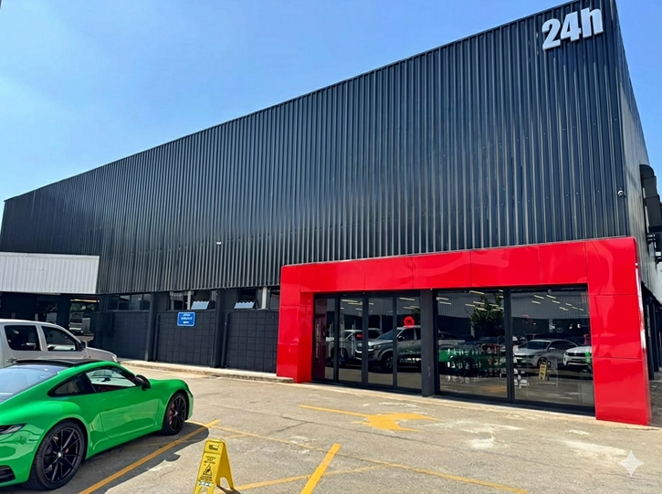
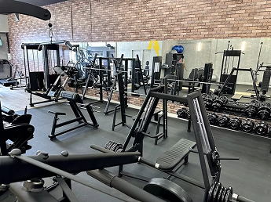
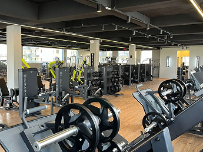
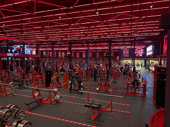
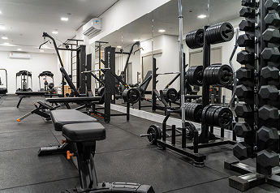

A Vidafit Academia é mais do que um espaço de treino.
É um ambiente dedicado à saúde, à qualidade de vida e ao desenvolvimento pessoal. Pensada para atender a comunidade local com proximidade e excelência.
A Vidafit oferece uma estrutura moderna, equipamentos de qualidade e acompanhamento profissional especializado.





A Vida Fit foi projetada para ser mais do que uma academia — é um ambiente completo que integra treino, bem-estar e conveniência para transformar a sua rotina.
Cada espaço foi pensado para oferecer conforto, eficiência e uma experiência que vai além do exercício físico.
A estrutura moderna e climatizada reúne equipamentos de alto padrão, áreas amplas para musculação e treinos funcionais, vestiários completos e um lounge que favorece momentos de descanso e socialização. O objetivo é proporcionar um fluxo de treino agradável, seguro e adaptado a diferentes níveis de condicionamento, do iniciante ao atleta experiente.